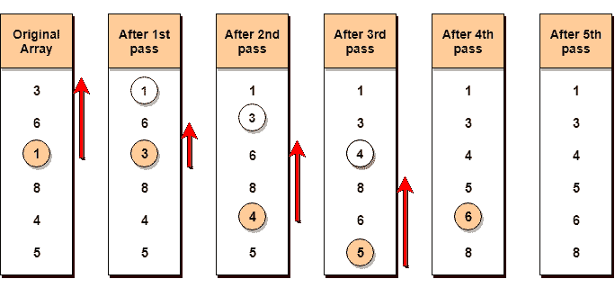

选择排序算法
原文：https://www.studytonight.com/data-structures/selection-sorting
选择排序是概念上最简单的排序算法。该算法将首先找到数组中最小的元素，并将其与第一位置的元素交换，然后找到第二最小的元素，并将其与第二位置的元素交换，并继续这样做，直到整个数组被排序。
之所以称之为选择排序，是因为它反复地选择下一个最小的元素，并将其交换到正确的位置。
选择排序是如何工作的？
以下是选择排序中涉及的步骤(用于按升序对给定数组进行排序):
- 从第一个元素开始，我们搜索数组中最小的元素，并用第一个位置的元素替换它。
- 然后我们继续到第二个位置，从索引
1开始，直到最后一个索引，寻找子数组中存在的最小元素。 - 我们用第二小元素替换原始数组中第第二位置的元素，或者我们可以说是子数组中第一个位置的元素。
- 重复这一过程，直到数组完全排序。
让我们考虑一个有值的数组{3, 6, 1, 8, 4, 5}
下面，我们有一个图示来说明选择排序将如何对给定的数组进行排序。

在第一个通道中，最小的元素将是1，因此它将被放置在第一个位置。
然后离开第一个元素，从剩余的元素中搜索下一个最小的元素。我们将得到3作为最小的，所以它将被放置在第二个位置。
然后离开1和3(因为它们在正确的位置)，我们将从剩下的元素中搜索下一个最小的元素，并将其放在第三个位置，一直这样做，直到数组被排序。
寻找子数组中的最小元素
在选择排序中，在第一步中，我们寻找数组中最小的元素，并用第一个位置的元素替换它。这似乎是可行的，不是吗？
假设您有一个具有以下值的数组{3, 6, 1, 8, 4, 5}。现在按照选择排序，我们将从第一个元素开始，寻找数组中最小的数字，这就是1，我们将在索引 2中找到它。一旦找到最小的数字，它将与第一个位置的元素交换。
在下一次迭代中，我们将不得不寻找数组中第二小的数字。如何才能找到第二小的数？这个很棘手？
如果你仔细看，我们已经在第一个位置有了最小的数字/元素，这是它的正确位置，我们现在不必移动它到任何地方。所以我们可以说，第一个元素是排序的，但是右边的元素，从索引1开始就没有。
所以，我们现在将寻找子数组中最小的元素，从索引1开始，到最后一个索引。
迷茫？给它时间去适应。
在我们找到第二个最小的元素并用索引1上的元素替换它之后(这是数组中的第二个位置)，我们将对数组的前两个位置进行排序。
然后我们再来研究子阵，从现在的索引2开始，再次寻找这个子阵中最小的元素。
实现选择排序算法
在下面的 C 程序中，我们试图把程序分成小函数，这样你就更容易理解哪个部分在做什么。
实现选择排序算法有很多不同的方法，下面是我们喜欢的一种:
// C program implementing Selection Sort
# include <stdio.h>
// function to swap elements at the given index values
void swap(int arr[], int firstIndex, int secondIndex)
{
int temp;
temp = arr[firstIndex];
arr[firstIndex] = arr[secondIndex];
arr[secondIndex] = temp;
}
// function to look for smallest element in the given subarray
int indexOfMinimum(int arr[], int startIndex, int n)
{
int minValue = arr[startIndex];
int minIndex = startIndex;
for(int i = minIndex + 1; i < n; i++) {
if(arr[i] < minValue)
{
minIndex = i;
minValue = arr[i];
}
}
return minIndex;
}
void selectionSort(int arr[], int n)
{
for(int i = 0; i < n; i++)
{
int index = indexOfMinimum(arr, i, n);
swap(arr, i, index);
}
}
void printArray(int arr[], int size)
{
int i;
for(i = 0; i < size; i++)
{
printf("%d ", arr[i]);
}
printf("\n");
}
int main()
{
int arr[] = {46, 52, 21, 22, 11};
int n = sizeof(arr)/sizeof(arr[0]);
selectionSort(arr, n);
printf("Sorted array: \n");
printArray(arr, n);
return 0;
}
注意:选择排序是不稳定排序，即排序时可能会改变列表中两个相似元素的出现。但是当使用链表实现时，它也可以作为一个稳定的排序。
选择排序的复杂度分析
Selection Sort 需要两个嵌套的for循环来完成自身，一个for循环在函数selectionSort中，在第一个循环中，我们正在调用另一个函数indexOfMinimum，它有第二个(内部)for循环。
因此，对于给定的输入大小n，选择排序算法的时间和空间复杂度如下:
最坏情况时间复杂度【大 O】:O(n2)
最佳案例时间复杂度[大ω]:O(n2)
平均时间复杂度【大θ】:O(n2)
空间复杂度: O(1)